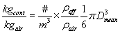

使用环境污染物 (CTM) 文件执行瞬态污染物模拟时，您可以考虑环境污染物浓度的变化。如果您将污染物文件与您的项目相关联（请参阅 运行控制属性 ) ContamX 会将项目文件中定义的污染物与污染物文件中包含的污染物进行比较。如果它们匹配，ContamX 将在模拟中使用污染物文件中的环境浓度，否则它们将被忽略。
您在 ContamW 外部创建污染物文件。您可以使用 NIST Weather 2.0 提供的实用程序将现有 CONTAM 1.0 天气（以前包含环境污染物浓度）文件转换为 CONTAM 2.0 天气和污染物文件。
请注意，使用此方法时，环境浓度不会在空间上变化，而只会在时间上变化。如果您需要室外污染物水平的空间变化，请参阅标题为“ 使用 WPC 文件 .
污染物 (CTM) 文件格式
CONTAM 污染物（种类）文件是制表符分隔的 ASCII 文本文件。使用常见的电子表格应用程序可以轻松创建、导入和修改这些文件。它们可以保存为制表符分隔的文本文件，以便与 CONTAM 一起使用。在下面的列表中 I1 表示一个字符串， I2 表示一个短整数并且 R4 表示一个四字节实数。各个数据行由破折号分隔（这些破折号仅出于格式演示目的而显示在此处，不应包含在实际文件中）。每天必须从时间 00:00:00 开始，到时间 24:00:00 结束。 00:00:00 和 24:00:00 之间的时间间隔可以是规则的或不规则的 – ContamX 将根据需要进行插值。允许发表评论，并用“！”表示。 （感叹号）。污染文件读取器将忽略注释指示器后面的行中出现的任何内容。
物种文件 ContamW 2.0！文件和版本标识
-----
I1 描述[]！物种文件描述
-----
I1 开始日期！一年中的某一天 (1/1 – 12/31)
I1 结束日期！一年中的某一天 (1/1 – 12/31)
I2 数字连续！物种数量
-----
I1 名称[1]！物种名称 1（最多 16 个字符）
I1 名称[2]！物种名称2
...
I2 名称[NumCont] !物种名称 NumCont
-----
!日期时间名称[1] 名称[2] ... 名称[NumCont]
-----
！每天：开始日期 – 结束日期
！每次：00:00:00 - 24:00:00 增量可能是可变的
I1 日期！日期 (1/1 – 12/31)
I1 时间！一天中的时间 00:00:00 – 24:00:00
R4 浓[1] !物种 1 的浓度
R4 浓[2] !物种2的浓度
...
R4 浓度[NumCont] !物种浓度 nc
！ [千克物种/千克空气]
-----
编辑污染物文件
您可以将环境文件导入到电子表格程序中进行编辑。但是，保存文件时必须确保日期格式与 CONTAM 兼容。一个著名的电子表格程序会将 CONTAM 日期格式 mm/dd 转换为 mmm-dd 形式。例如，1 月 1 日的 CONTAM 日期格式为“1/1”，但电子表格程序会将其转换为“Jan-01”，除非您“强制”它以文本形式导入第一列数据（包含日期信息的数据列）。另一种选择是接受默认导入选项，然后将每个日期的单元格格式更改为 CONTAM 格式 mm/dd，然后再将文件保存为制表符分隔。
气态污染物 – 从 ppm 转换为：
kg/kg = (ppm ´ MW) / (1 000 000 ´ Vs ´ rair)
mg/L = (ppm ´ MW) / (1 000 ´ Vs)
mg/m3 = (ppm ´ MW) / Vs
mg/ft3 = (ppm ´ MW) / (35.3147 ´ Vs)
颗粒污染物 – 转换自 #/m3 to kg/kg:

其中：
MW = 污染物的摩尔质量 [kg/kmol]
Vs = 24.05 m 3 这是 T = 20 ℃ 且 P = 101 325 Pa (1 atm) 时 1 kmol 空气的体积
rair = 1.204 公斤/米 3 在 T = 20 ℃
reff = 有效颗粒密度 [kg/m 3]
D 意思是 = 平均粒径 [m]